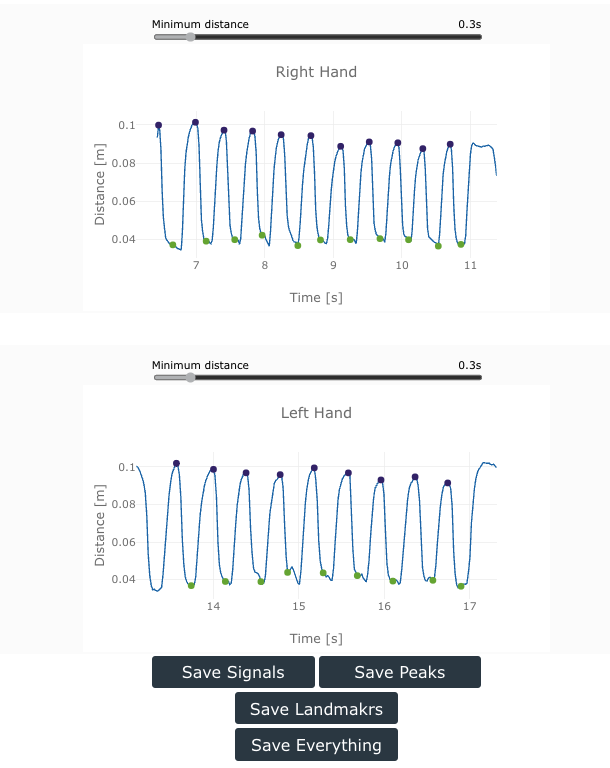

Results
Once you start processing a video, the progress will be shown in the audio waveform. This visual aid will help you to estimate the processing speed and remaining processing time.
After the video processing in completed, The Hand Tracking Tool will provide two plots showing the distance between thumb and index fingers for the right and left hands. If your analysis includes only one hand, then you will still see both plots but only one will have data in it. You can download the plots as images by right click on the plot.

The signals are low-pass filtered by a 10Hz filter.
Peaks and valleys
The Hand Tracking Tool will automatically identify the peaks and valleys on the signal, corresponding to the opening and closing of the fingers. Peaks are identified with purple marks, and valleys with green marks.
Modifying Peaks and Valleys
-
Peak to Peak Distance: The peak detection algorithm can be modified to discard peaks that are too close toghether. The default minimum distance is 0.3s, and this value can be modified with the sliding bar on top of the plot.
-
Remove Peaks or Valleys: You can select a peak or valley by clicking on it, the selected element will change its color to magenta
- To de-select an element, press Esc
- To remove an element, press R
-
Add Peaks: You can add a new Peaks by pressing and holding Q, and clicking in the curve. A new purple mark will be added.
-
Add Valley: You can add a new Valley by pressing and holding W, and clicking in the curve. A new green mark will be added.
Saving Data
The Hand Tracking Tool allows you save all the resuls, including the signals, the peaks and valleys, the landmarks, and everything together. Data will be stored as a .JSON file than can be easily read using regular data analysis software.